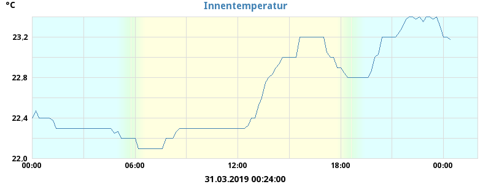
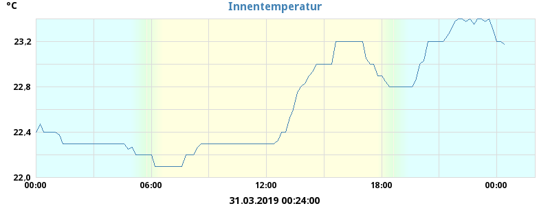
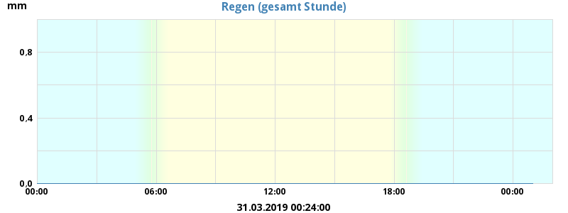
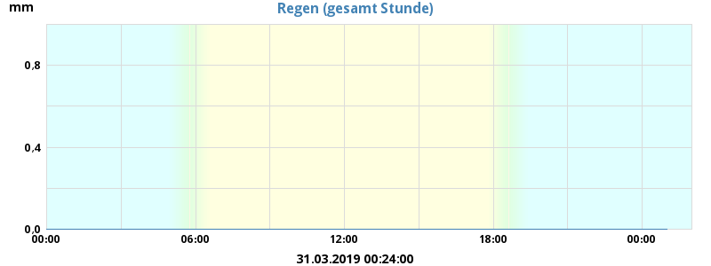
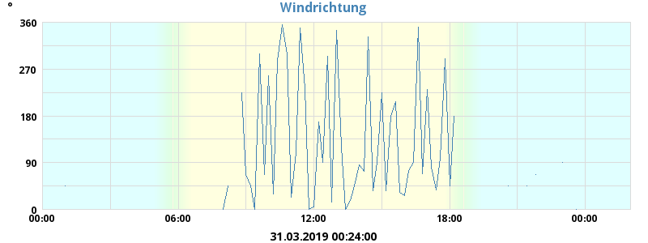
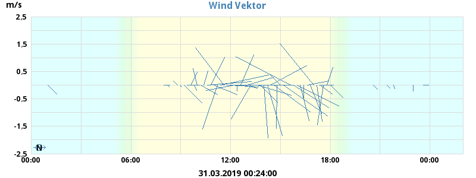
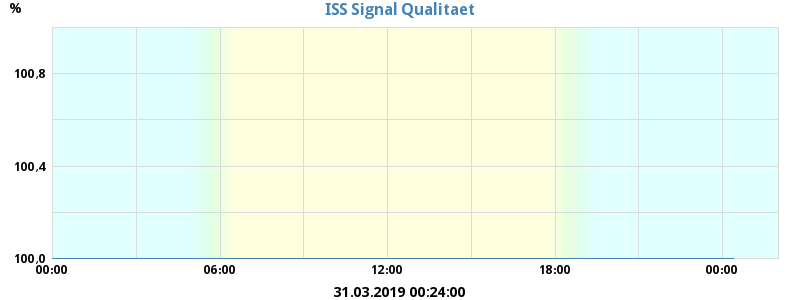
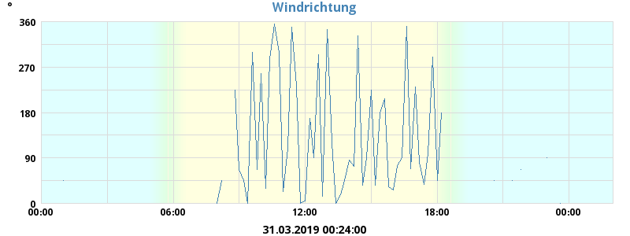
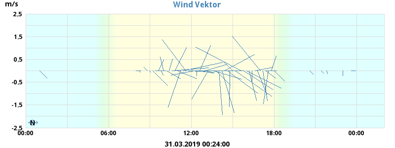
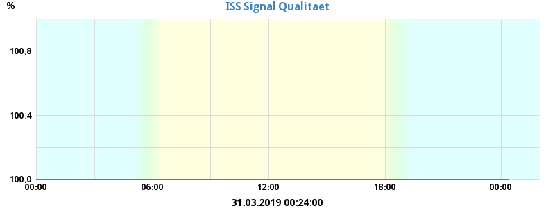

Aktuelles Wetter
| Temperatur außen | 9,4°C |
| Temperatur innen | 21,0°C |
| Windchill | 9,4°C |
| Hitze-Index | 9,4°C |
| Taupunkt | 5,9°C |
| Luftfeuchte | 79% |
| Luftdruck | 1015 mbar |
| Luftdruck Trend (3 Stunden) | -0 mbar |
| Wind | 0,0 m/s N/A ( N/A) |
| Regen-Rate | 0,6 mm/h |
Höchst- und Tiefstwerte des Tages
| Höchste Temperatur außen | 10,8°C | 06:02:39 |
| Niedrigste Temperatur außen | 9,2°C | 09:13:27 |
| Höchste Temperatur innen | 21,4°C | 00:01:32 |
| Niedrigste Temperatur innen | 21,0°C | 14:14:36 |
| Höchster Hitze-Index | 10,8°C | 06:02:39 |
| Niedrigste Windchill | 8,1°C | 01:21:46 |
| Höchster Taupunkt | 6,8°C | 11:54:02 |
| Niedrigster Taupunkt | 4,8°C | 03:02:06 |
| Höchste Luftfeuchte | 83% | 10:43:46 |
| Niedrigste Luftfeuchte | 69% | 06:02:39 |
| Höchster Luftdruck | 1016 mbar | 11:23:54 |
| Niedrigster Luftdruck | 1013 mbar | 04:42:23 |
| Heutiger Regenfall | 0,6 mm | |
| Max. Regen-Rate | 1,2 mm/h | 09:33:30 |
| Max. Wind | 6,1 m/s N/A | 05:42:37 |
| Wind (Durchschnitt) | 1,2 m/s | |
| Wind (RMS) | 1,4 m/s | |
| Wind Geschwindigkeit | 0,7 m/s | |
| Vorwiegende Windrichtung | 27° |


Jahrbuch / Kalender / Almanac
| Sonnenaufgang: | 07:59:00 |
| Sonnenuntergang: | 16:39:28 |
| Mond Phase: | zunehmender Halbmond (57% voll) |
Grafiken
 

 


 




